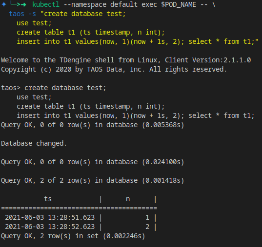

使用Helm部署TDengine集群
Helm 是 Kubernetes 的包管理器，上一节中的操作已经足够简单，但Helm依然可以提供更强大的能力。
安装 Helm
curl -fsSL -o get_helm.sh \
https://raw.githubusercontent.com/helm/helm/master/scripts/get-helm-3
chmod +x get_helm.sh
./get_helm.sh
Helm 会使用 kubectl 和 kubeconfig 的配置来操作 Kubernetes，可以参考 Rancher 安装 Kubernetes 的配置来进行设置。
安装 TDengine Chart
TDengine Chart 尚未发布到 Helm 仓库，当前可以从GitHub直接下载：
wget https://github.com/taosdata/TDengine-Operator/raw/3.0/helm/tdengine-3.0.2.tgz
获取当前 Kubernetes 的存储类：
kubectl get storageclass
在 minikube 默认为 standard.
之后，使用helm命令安装：
helm install tdengine tdengine-3.0.2.tgz \
--set storage.className=<your storage class name>
在 minikube 环境下，可以设置一个较小的容量避免超出磁盘可用空间：
helm install tdengine tdengine-3.0.2.tgz \
--set storage.className=standard \
--set storage.dataSize=2Gi \
--set storage.logSize=10Mi
部署成功后，TDengine Chart将会输出操作TDengine的说明：
export POD_NAME=$(kubectl get pods --namespace default \
-l "app.kubernetes.io/name=tdengine,app.kubernetes.io/instance=tdengine" \
-o jsonpath="{.items[0].metadata.name}")
kubectl --namespace default exec $POD_NAME -- taos -s "show dnodes; show mnodes"
kubectl --namespace default exec -it $POD_NAME -- taos

您可以自行尝试一下，就像这样：

可以创建一个表进行测试：
kubectl --namespace default exec $POD_NAME -- \
taos -s "create database test;
use test;
create table t1 (ts timestamp, n int);
insert into t1 values(now, 1)(now + 1s, 2);
select * from t1;"

Values 配置
TDengine 支持 values.yaml 自定义。
通过 helm show values 可以获取TDengine Chart支持的全部values列表：
helm show values tdengine-3.0.2.tgz
你可以将结果保存为 values.yaml，之后可以修改其中的各项参数，如 replica 数量，存储类名称，容量大小，TDengine 配置等，然后使用如下命令安装 TDengine 集群：
helm install tdengine tdengine-3.0.2.tgz -f values.yaml
全部参数如下：
# Default values for tdengine.
# This is a YAML-formatted file.
# Declare variables to be passed into helm templates.
replicaCount: 1
image:
prefix: tdengine/tdengine
#pullPolicy: Always
# Overrides the image tag whose default is the chart appVersion.
# tag: "3.0.0.0"
service:
# ClusterIP is the default service type, use NodeIP only if you know what you are doing.
type: ClusterIP
ports:
# TCP range required
tcp: [6030, 6041, 6042, 6043, 6044, 6046, 6047, 6048, 6049, 6060]
# UDP range
udp: [6044, 6045]
# Set timezone here, not in taoscfg
timezone: "Asia/Shanghai"
resources:
# We usually recommend not to specify default resources and to leave this as a conscious
# choice for the user. This also increases chances charts run on environments with little
# resources, such as Minikube. If you do want to specify resources, uncomment the following
# lines, adjust them as necessary, and remove the curly braces after 'resources:'.
# limits:
# cpu: 100m
# memory: 128Mi
# requests:
# cpu: 100m
# memory: 128Mi
storage:
# Set storageClassName for pvc. K8s use default storage class if not set.
#
className: ""
dataSize: "100Gi"
logSize: "10Gi"
nodeSelectors:
taosd:
# node selectors
clusterDomainSuffix: ""
# Config settings in taos.cfg file.
#
# The helm/k8s support will use environment variables for taos.cfg,
# converting an upper-snake-cased variable like `TAOS_DEBUG_FLAG`,
# to a camelCase taos config variable `debugFlag`.
#
# See the variable list at https://www.taosdata.com/cn/documentation/administrator .
#
# Note:
# 1. firstEp/secondEp: should not be setted here, it's auto generated at scale-up.
# 2. serverPort: should not be setted, we'll use the default 6030 in many places.
# 3. fqdn: will be auto generated in kubenetes, user should not care about it.
# 4. role: currently role is not supported - every node is able to be mnode and vnode.
#
# Btw, keep quotes "" around the value like below, even the value will be number or not.
taoscfg:
# Starts as cluster or not, must be 0 or 1.
# 0: all pods will start as a seperate TDengine server
# 1: pods will start as TDengine server cluster. [default]
CLUSTER: "1"
# number of replications, for cluster only
TAOS_REPLICA: "1"
#
# TAOS_NUM_OF_RPC_THREADS: number of threads for RPC
#TAOS_NUM_OF_RPC_THREADS: "2"
#
# TAOS_NUM_OF_COMMIT_THREADS: number of threads to commit cache data
#TAOS_NUM_OF_COMMIT_THREADS: "4"
# enable/disable installation / usage report
#TAOS_TELEMETRY_REPORTING: "1"
# time interval of system monitor, seconds
#TAOS_MONITOR_INTERVAL: "30"
# time interval of dnode status reporting to mnode, seconds, for cluster only
#TAOS_STATUS_INTERVAL: "1"
# time interval of heart beat from shell to dnode, seconds
#TAOS_SHELL_ACTIVITY_TIMER: "3"
# minimum sliding window time, milli-second
#TAOS_MIN_SLIDING_TIME: "10"
# minimum time window, milli-second
#TAOS_MIN_INTERVAL_TIME: "1"
# the compressed rpc message, option:
# -1 (no compression)
# 0 (all message compressed),
# > 0 (rpc message body which larger than this value will be compressed)
#TAOS_COMPRESS_MSG_SIZE: "-1"
# max number of connections allowed in dnode
#TAOS_MAX_SHELL_CONNS: "50000"
# stop writing logs when the disk size of the log folder is less than this value
#TAOS_MINIMAL_LOG_DIR_G_B: "0.1"
# stop writing temporary files when the disk size of the tmp folder is less than this value
#TAOS_MINIMAL_TMP_DIR_G_B: "0.1"
# if disk free space is less than this value, taosd service exit directly within startup process
#TAOS_MINIMAL_DATA_DIR_G_B: "0.1"
# One mnode is equal to the number of vnode consumed
#TAOS_MNODE_EQUAL_VNODE_NUM: "4"
# enbale/disable http service
#TAOS_HTTP: "1"
# enable/disable system monitor
#TAOS_MONITOR: "1"
# enable/disable async log
#TAOS_ASYNC_LOG: "1"
#
# time of keeping log files, days
#TAOS_LOG_KEEP_DAYS: "0"
# The following parameters are used for debug purpose only.
# debugFlag 8 bits mask: FILE-SCREEN-UNUSED-HeartBeat-DUMP-TRACE_WARN-ERROR
# 131: output warning and error
# 135: output debug, warning and error
# 143: output trace, debug, warning and error to log
# 199: output debug, warning and error to both screen and file
# 207: output trace, debug, warning and error to both screen and file
#
# debug flag for all log type, take effect when non-zero value\
#TAOS_DEBUG_FLAG: "143"
# generate core file when service crash
#TAOS_ENABLE_CORE_FILE: "1"
扩容
关于扩容可参考上一小节的说明，有一些额外的操作需要从 helm 的部署中获取。
首先，从部署中获取 StatefulSet 的名称。
export STS_NAME=$(kubectl get statefulset \
-l "app.kubernetes.io/name=tdengine" \
-o jsonpath="{.items[0].metadata.name}")
扩容操作极其简单，增加replica即可。以下命令将TDengine扩充到三节点：
kubectl scale --replicas 3 statefulset/$STS_NAME
使用命令 show dnodes show mnodes 检查是否扩容成功：

缩容
缩容操作并没有完整测试，可能造成数据风险，请谨慎使用。
相较与上一小节，缩容也需要额外的步骤。
获取需要缩容的dnode列表，并手动Drop。
kubectl --namespace default exec $POD_NAME -- \
cat /var/lib/taos/dnode/dnodeEps.json \
| jq '.dnodeInfos[1:] |map(.dnodeFqdn + ":" + (.dnodePort|tostring)) | .[]' -r
kubectl --namespace default exec $POD_NAME -- taos -s "show dnodes"
kubectl --namespace default exec $POD_NAME -- taos -s 'drop dnode "<you dnode in list>"'

清理
Helm管理下，清理操作也变得简单：
helm uninstall tdengine
但Helm也不会自动移除PVC，需要手动获取PVC然后删除掉。